AI Academy · Level 2 · Grade 7 · Week 14 · Student lesson
Decision Trees
Learn to understand, design, build, test and explain AI systems responsibly.
Project: Transparent Book Recommender
Before you start
Week 3: ordered questions route a case to one outcome.
Plan time to read, investigate and explain. Keep predictions separate from observations.
Student lesson · 1 of 17
Your mission
Your learning target
I can fit a root question and leaf predictions from training examples.
I can trace a new example through the learned tree.
I can compare a shallow tree with a baseline and state its limits.
Remember before reading
Close your notes first. A rough first answer helps us choose the right starting point; it is not a score for your ability.
Without opening the old lesson, explain one key idea from Types of Classification Error. Give an example and a mistake that the idea helps you avoid.
Without opening the old lesson, explain one key idea from Training and Testing. Give an example and a mistake that the idea helps you avoid.
Without opening the old lesson, explain one key idea from Operational Labels. Give an example and a mistake that the idea helps you avoid.
After trying, check the relevant lesson or ask your teacher. Change the part of your explanation that the evidence shows was wrong.
Week 14: Decision Trees
Each question partitions possibilities; question order affects efficiency.
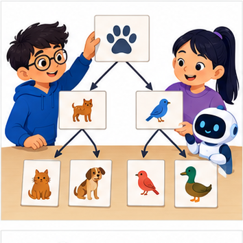
THINKER MISSION
Build a tree that identifies eight mystery animals.
Thinker name and date:
Readiness for the connected explanation
Why does a cutoff with zero training errors still need validation on separate examples?
This week’s end goal
By the end, I can fit a one-question tree using training labels and an explicit candidate comparison.
Student lesson · 2 of 17
Notice the evidence
PICTURE STORY
Notice → Predict → Explain
Begin with visible evidence. Do not explain more than the picture and information support.
MYSTERY
The learners must use decision trees to solve a problem. What information do they have? What decision or calculation do they make? What would count as evidence that it worked?
Three observations (what you can point to):
My prediction and the clue supporting it:
A closer explanation
A decision tree asks a feature question and follows a branch to a prediction. A tree with one question has depth one and is sometimes called a stump. Unlike Week 8, where the two output labels were fixed in advance, this week we fit both the question and the label stored at each leaf.
Our six fictional training rows have two binary sensor flags available before prediction: near and tall. A value of 1 means that flag is present; 0 means absent. The reviewed scene label is separate. Each row represents a different trip on a familiar route, including rows with identical values. Similar readings can have different scene labels. These are teaching examples, not robot control instructions.
| Row | Near | Tall | Label |
|---|---|---|---|
| 1 | 1 | 0 | blocked |
| 2 | 1 | 1 | blocked |
| 3 | 1 | 0 | blocked |
| 4 | 0 | 1 | clear |
| 5 | 0 | 0 | clear |
| 6 | 0 | 1 | blocked |
Try near first and tall second. For each question, group the training rows by 0 and 1, then predict each group’s majority label; choose clear for tied label counts. Count all training mistakes and keep the first question if scores tie. Stop after one question. This is our stated classroom fitting procedure.
Student lesson · 3 of 17
See how it works
VISUAL MECHANISM
Input → Process → Output
Trace the information. At each stage, ask what changed and how you could test it.
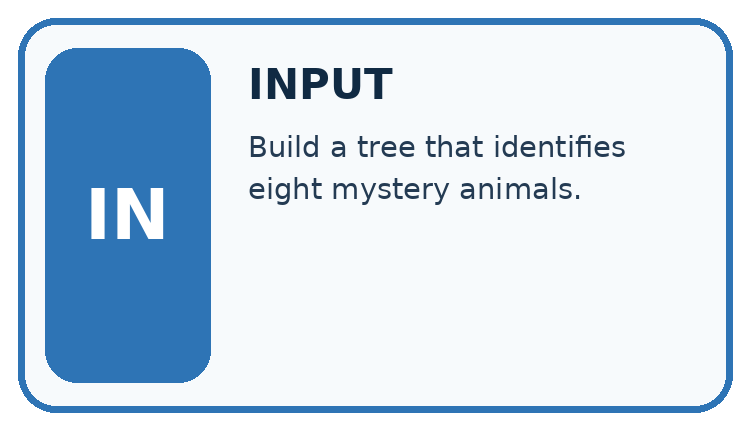
↓
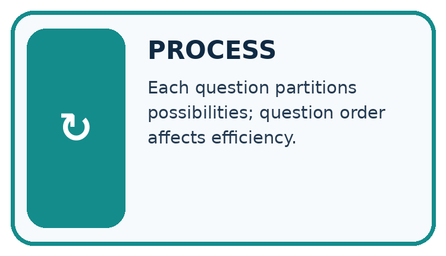
↓
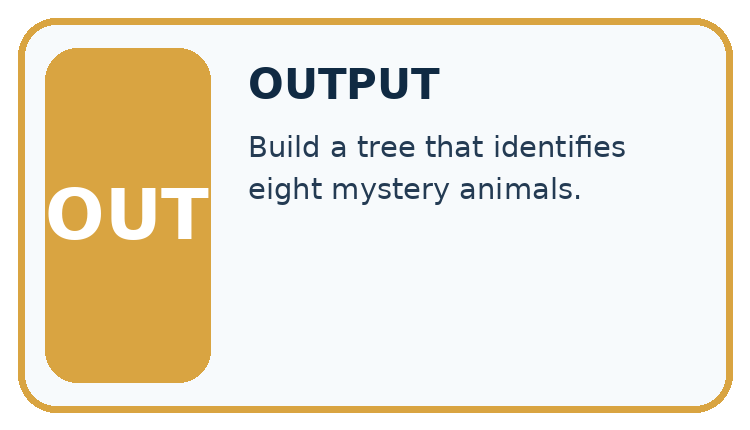
Which stage could fail even when the other two are correct? Explain:
A closer explanation
rows = [(1, 0, "blocked"), (1, 1, "blocked"),
(1, 0, "blocked"), (0, 1, "clear"),
(0, 0, "clear"), (0, 1, "blocked")]
def majority(labels):
if labels.count("blocked") > labels.count("clear"):
return "blocked"
return "clear"
best_errors = len(rows) + 1
for feature in [0, 1]:
leaves = {}
for value in [0, 1]:
labels = [row[2] for row in rows
if row[feature] == value]
leaves[value] = majority(labels)
errors = 0
for row in rows:
if leaves[row[feature]] != row[2]:
errors = errors + 1
print(feature, errors)
if errors < best_errors:
best_errors = errors
tree = (feature, leaves)
print(tree[0], tree[1][0], tree[1][1])Feature 0 is near; feature 1 is tall; row[2] is the label. Output is 0 1, then 1 2, then 0 clear blocked. Near makes one training mistake: near=0 contains two clear labels and one blocked, so that leaf predicts clear. Near=1 contains three blocked labels. Tall makes two mistakes because both its groups have a blocked majority.
The stored tree contains the chosen feature and its two learned leaves. The code assumes nonempty data, binary flags, allowed labels and examples on both branches of each candidate. An empty branch would need a declared fallback; this small example does not implement one. The score is total training mistakes, not an average giving small and large branches equal weight.
This is an explicitly limited depth-one learner. General tree algorithms can repeat split selection within branches and often use impurity criteria such as Gini. Our code does not implement that full procedure. Keeping the scope small lets you inspect every decision.
Connect the picture and the explanation
Point to the input, the deciding step and the result in this week’s visual. Explain the same step in ordinary words. A picture helps when you can say what each part represents.
Student lesson · 4 of 17
Compare the cases
CASE GALLERY
Four Tests, Four Kinds of Evidence
A system is not understood until it survives more than one comfortable example.


NORMAL CASE: predict and name evidence. BOUNDARY CASE: predict and name evidence.


MISSING INFORMATION: predict and name evidence. TRANSFER CASE: predict and name evidence.
Which case is most likely to reveal a hidden assumption? Why?
Change one thing in the pictured case
Change: New input becomes (0,1).
Prediction: The fitted tree predicts Yes.
Reason: It follows diagram=1; cover colour is not the selected question.
Student lesson · 5 of 17
Words that unlock the idea
VOCABULARY LAB
Words You Can Use to Reason
A definition matters when you can recognize the idea, use it, and contrast it with a near-miss.
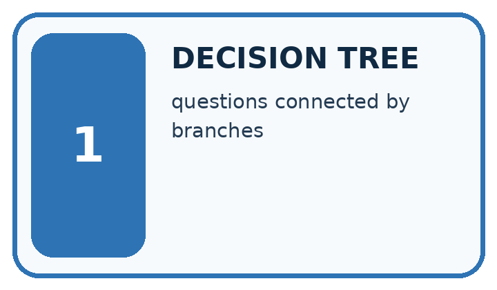
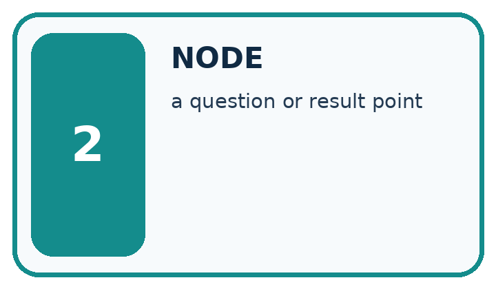
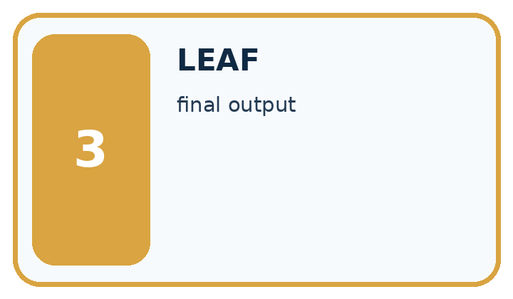
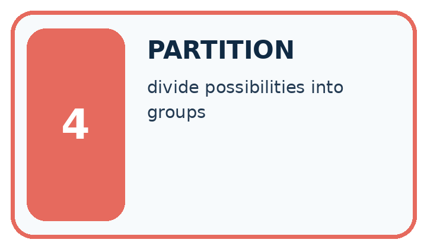
| Word | My own example | Not this / boundary |
|---|---|---|
| decision tree | A sequence of branching questions that routes an input to an output at a leaf. | |
| node | A point in a graph or tree representing a state, question or result. | |
| leaf | A final node of a decision tree that supplies an output rather than another question. | |
| partition | One separated portion of a dataset, such as training, validation or test data. |
Words used in the closer explanation
| Word | Meaning |
|---|---|
| Root | The first question asked by a tree |
| Branch | A path selected by the answer to a question |
| Depth | The largest number of question steps from root to leaf |
Student lesson · 6 of 17
Follow a worked example
WORKED EVIDENCE
Reason Step by Step
Predict first. Then check each step. A correct answer without visible reasoning is incomplete evidence.
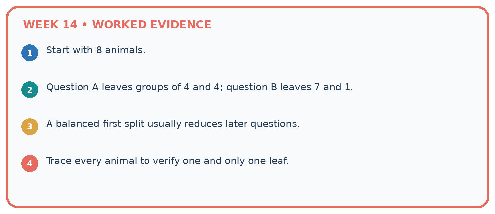
1. Start with 8 animals.
2. Question A leaves groups of 4 and 4; question B leaves 7 and 1.
3. A balanced first split usually reduces later questions.
4. Trace every animal to verify one and only one leaf.
Recalculate, retrace, or restate the reasoning in your own representation:
CHECK Did the evidence answer the exact question? Did the total, path, or source record stay consistent?
A closer explanation
Two paths through the learned tree
Validation rows are (near=1,tall=1,blocked), (0,0,clear), (0,1,blocked), (1,0,clear). Follow only near: predictions are blocked, clear, clear, blocked. Two of four match. The training-majority baseline predicts blocked, since training has four blocked and two clear; it also matches two of four validation labels.
Keep the fitted root and leaves unchanged while scoring. Equal accuracy does not mean identical errors, and five correct training predictions out of six is not the validation result.
Learn from the worked case
Cover the result before checking it. Say what is given, choose the procedure, and follow one step at a time. Then uncover the result and explain your first mismatch. Ask why a step is allowed, not only what number it produces.
A pictorial worked case: Decision Trees
A fictional toy classifier predicts whether a book needs an illustration label.
The facts we will use
Training rows (colour_cover,diagram_inside,label): (1,1,Yes),(1,0,No),(0,1,Yes),(0,0,No).
Candidates ask colour_cover or diagram_inside; each leaf uses its training majority. A leaf tie chooses No. Select fewer training errors.

Read the picture one step at a time
Why this result follows
A question becomes a fitted tree only after its leaves and selection procedure are specified. The training comparison prefers the feature that separates these labels. Prediction follows the selected question; it does not reselect the tree using a new case’s answer. Save candidate leaves and errors so the choice can be repeated.
What this example does not establish
Zero errors on four toy examples do not establish that diagrams always determine a real book’s classification.
Read the labelled picture: Why does changing colour alone not change this tree’s prediction?
Change one thing: New input becomes (0,1). Predict the result before checking the explanation. What remains the same?
Student lesson · 7 of 17
Find and repair a mistake
ERROR DETECTIVE
Compare → Diagnose → Repair
Do not patch the answer. Find the earliest unsupported assumption, wrong step, or weak evidence.
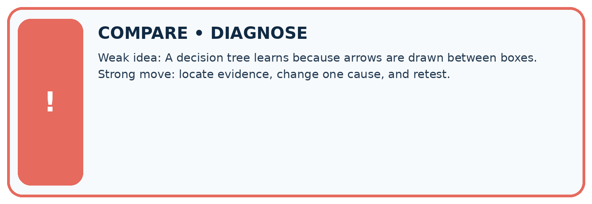
| Evidence record | Expected | Actual | Likely cause / next test |
|---|---|---|---|
| normal case | works | ||
| boundary case | stated rule | ||
| missing input | safe response | ||
| fresh transfer | generalizes |
Repair one cause. Why is this repair better than changing several things?
A closer explanation
Record the two candidate questions, branch label counts, total errors, tie rules, depth limit, stored tree and validation predictions. Retain all rows, including the blocked example in the near=0 branch; removing a disagreement would change the evidence.
Our tree uses a single feature because that question scored better under this procedure. This neither establishes that near causes blockage nor that tall is useless in every dataset. Next week a nearest-neighbour method will predict by comparing examples instead of following learned questions.
Student lesson · 8 of 17
Practise together
LOGIC STUDIO
Trace Before You Run
Block code, pseudocode, tables, and diagrams are different ways to expose the same reasoning.

SET evidence_record PREDICT expected_result RUN one normal case and one boundary case COMPARE actual_result with expected_result IF different: locate first cause; change one factor; RETEST EXPLAIN result, limitation, and next safe step
Trace one input. Which line changes the state or chooses a path?
A closer explanation
Do not assume near=1 must always predict blocked. If a new training set gives that branch a clear majority, this same learner will store clear there. A feature name is not the answer. Use the training labels belonging to that branch.
Adding more questions can fit finer training details but does not guarantee better new-case performance. Record any depth choice made during development, and keep final test data separate. A leaf majority describes this training group; it is not a promise about every future example.
Practise with less help: Verify the candidate scores
Use workbook W2 for the connected example “Fitting a decision tree”. First fill the input and rule boxes. Try the middle steps before asking for a hint. After a hint, try the next step yourself.
| Plan | Do | Check |
|---|---|---|
| What is given? Which rule or procedure applies? | Record each intermediate step. | Does the result follow? What remains unknown? |
Explain your trace to a partner. Your partner points to one step to check. Swap roles on the next case. Each person writes their own explanation.
Check your reasoning
Use the worked case for Fitting a decision tree. Proposed explanation: “A near branch must predict blocked”. Decide whether this explanation is supported. Point to the step or supplied fact that decides; explain your repair if needed.
Answer on your own before discussion. If you are unsure, say which step you need help with.
Explain the picture
Why does changing colour alone not change this tree’s prediction?
This is supported practice. Keep the separately named independent case for an attempt before feedback.
Student lesson · 9 of 17
Run the investigation
EVIDENCE LAB
Predict → Test → Record → Explain
Keep expected and actual results separate. Surprises are useful data when recorded honestly.
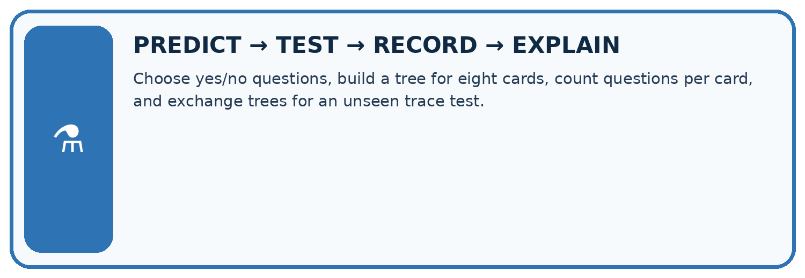
Choose yes/no questions, build a tree for eight cards, count questions per card, and exchange trees for an unseen trace test.
| Test / input | Prediction | Actual | Evidence / calculation | Change or keep? |
|---|---|---|---|---|
| normal | ||||
| boundary | ||||
| missing | ||||
| fresh transfer |
What did the hardest test teach you that the normal test did not?
Plan → try → check
Before trying: what do I expect, and why? While trying: which step could first go wrong? Afterwards: what did I actually observe, and what should change? Keep “not run” if you only traced the procedure.
Student lesson · 10 of 17
Build your understanding
MASTERY
From Knowing the Word to Owning the Idea
Move upward only when you can produce evidence without copying the worked example.

1 • NAME: Define the concept without repeating the textbook.
2 • TRACE: Show the information, state, branch, calculation, or evidence path.
3 • APPLY: Solve a different example independently.
4 • CHALLENGE: Find a boundary case, counterexample, or unfair outcome.
5 • EXPLAIN LIMITS: Say when the result should not be trusted or used alone.
My strongest evidence of independent understanding:
Student lesson · 11 of 17
Connect your project
CUMULATIVE PROJECT
Transparent Book Recommender
Every week adds one inspectable piece. The system must show how it reached a result.
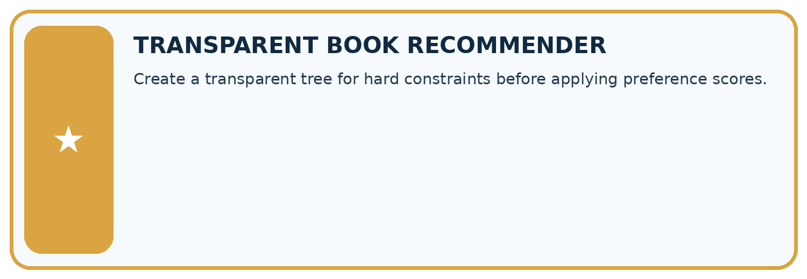
THIS WEEK’S CHECKPOINT Create a transparent tree for hard constraints before applying preference scores.
SYSTEM MAP Reader need → allowed inputs → transparent rule or score → ranked candidates → explanation → test record → human decision
What will you add, change, or verify in the project this week?
What should remain under human control?
RESPONSIBLE DESIGN Collect only necessary information. Show uncertainty and limits. Never confuse a ranking with a fact about a person.
Evidence for your project
Fit or hand-specify recommender classification rules transparently, retaining candidate definitions and training-only selection evidence.
Student lesson · 12 of 17
Show what you know
INDEPENDENT MASTERY PROOF
Explain • Transfer • Test • Defend
Complete this page without copying the worked example. Your reasoning matters more than decoration.
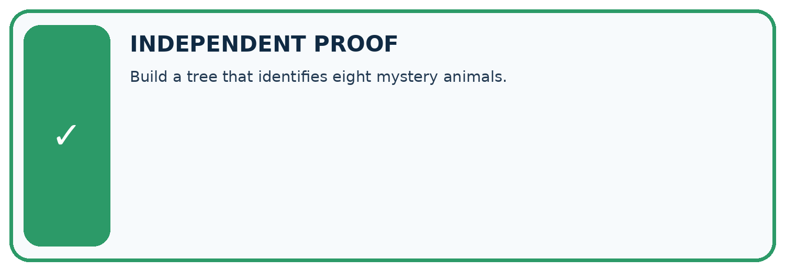
CHALLENGE Build a tree that identifies eight mystery animals.
1. My fresh example, trace, calculation, or design:
2. My evidence that it works (include a boundary or missing-data case):
3. One limitation, fairness concern, or situation needing human review:
SELF-CHECK □ I explained the mechanism □ I used evidence □ I tested a fresh case □ I named a limitation □ I can answer ‘why?’
Student lesson · 13 of 17
Study a complete case
Week 14 Worked case
Use the supplied details to practise the weekly concept before attempting the independent question. This case extends the illustrated lesson.
The situation
First ask animal book? If no, Other. If yes, ask pages<100; yes gives Short Animal, no gives Longer Animal.
The question
Trace 90-page animal and science books.
Worked explanation
The animal book reaches Short Animal; science reaches Other after the first question.
Explain it in your own words
Which detail supports the answer, and why does it matter?
Trace the supplied case visually
A decision tree can stop early
| Evidence or stage | Value or result |
|---|---|
| Not an animal book | Other |
| Animal and fewer than 100 pages | Short Animal |
| Animal and at least 100 pages | Longer Animal |
First ask animal book? If no, Other. If yes, ask pages<100; yes gives Short Animal, no gives Longer Animal.
Trace 90-page animal and science books.
The animal book reaches Short Animal; science reaches Other after the first question.
Student lesson · 14 of 17
Try a new case independently
Independent case: Fit a new tree independently
New training rows (near,tall,label) are (1,0,clear),(1,1,clear),(1,0,clear),(0,1,blocked),(0,0,blocked),(0,1,clear). Use the same candidate order and tie policies. Give both candidates’ leaves and errors, then select the tree. Validation rows are (1,1,clear),(0,0,blocked),(0,1,clear),(1,0,blocked). List tree predictions and compare accuracy with the training-majority baseline.
Attempt this case before feedback. Record any help. Earlier examples below are further practice; a case already practised with feedback cannot establish fresh transfer.
Week 14 Independent application
Close the worked explanation. Apply the idea to this different question without copying.
A tree asks topic is space, then pages at most 60. A space book has 70 pages. Trace both answers and explain why you cannot stop at the first question.
My answer, with a trace, calculation or supporting evidence
Create and test
Change one relevant detail. Predict the result before testing. Include a boundary or missing-information case when it helps reveal a limit.
My changed input and expected result
Connect to your project
Create a transparent tree for hard constraints before applying preference scores.
The evidence I will keep
Your teacher has the independent answer and scoring criteria. Complete the matching workbook week to keep your practice evidence together.
Transfer practice from the original programme
Build a tree for science books: first ask science?; then, for yes, pages<=100? Trace science/100 and history/70. What should happen to science with missing pages?
Use feedback to improve
Attempt the independent case before hints. Record whether you worked alone, used a hint or followed a model. After feedback, fix the first unsupported step and explain why it changed. A later check uses a changed case, not a copied answer.
Student lesson · 15 of 17
Your lesson route
Start with this question: A fictional toy classifier predicts whether a book needs an illustration label.
| By the end, I can | How I will show it |
|---|---|
| Fit a root question and leaf predictions from training examples | Explain the deciding step, show a trace or test, and state one limit. |
| Trace a new example through the learned tree | Explain the deciding step, show a trace or test, and state one limit. |
| Compare a shallow tree with a baseline and state its limits | Explain the deciding step, show a trace or test, and state one limit. |
Remember → watch and explain → try with help → investigate → try independently → keep project evidence. Your teacher may spread this lesson across several classes.
Keep your first prediction. Compare it with what the evidence shows and explain any change.
Student lesson · 16 of 17
Finish and return
Close your notes. Explain this goal in your own words: Fit a root question and leaf predictions from training examples
If you are unsure, return to the worked picture and explain one arrow. If you are ready, change an input or assumption and justify your prediction.
Save your workbook evidence. At the next review, try a different case before opening your old answer.
Student lesson · 17 of 17
Supported practice, repair and portfolio
Use this supported practice once, in the browser or on paper. Keep the reserved independent assessment for a separate first attempt before teacher feedback.
A fictional toy classifier predicts whether a book needs an illustration label.
Practice 1: explain the deciding evidence
Which labelled step matches this detail? A new (1,0) row follows diagram=0 and predicts No.
1. Select tree
2. Diagram candidate
3. Colour candidate
4. Apply new input
Hint if needed: Read the steps in the pictorial case. Match the supplied detail to the stage that performs or records it.
After your attempt, compare with the supported explanation: Apply new input A new (1,0) row follows diagram=0 and predicts No. A question becomes a fitted tree only after its leaves and selection procedure are specified. The training comparison prefers the feature that separates these labels. Prediction follows the selected question; it does not reselect the tree using a new case’s answer. Save candidate leaves and errors so the choice can be repeated.
Practice 2: explain the deciding evidence
Changed-case practice: New input becomes (0,1). Which conclusion is supported by the supplied facts?
1. The fitted tree predicts Yes.
2. This one example guarantees correct results for every future input.
3. We can decide the result without examining the changed input or the procedure.
Hint if needed: Use the changed condition and the deciding step in the pictorial trace. The answer must say what follows from those facts.
After your attempt, compare with the supported explanation: The fitted tree predicts Yes. It follows diagram=1; cover colour is not the selected question.
Repair a missing building block
Review Types of Classification Error (ai-2/13). Goal: Build a labelled confusion matrix from matched reference and prediction pairs. Short practice: Which error causes a sound book to be sent for unnecessary repair review?. Return to this week and explain what you changed.
Review Training and Testing (ai-2/11). Goal: Choose a split unit that matches the intended prediction claim. Short practice: How many distinct books are in each repaired role, and why report that as well as scan counts?. Return to this week and explain what you changed.
Review Operational Labels (ai-2/8). Goal: Apply a category definition using explicit evidence and boundary rules. Short practice: Why can we not resolve the disagreement merely by taking a majority of reviewers?. Return to this week and explain what you changed.
Predict, run and debug
The browser lab lets you edit the supported Python examples already included in this lesson. Predict first, run, inspect the actual output or error, change one input, then run again. Keep code, predictions, actual results and a reasoned revision together. On paper, label your result as a trace rather than an execution.
Keep your completed work
Use Download completed work in the hosted lesson to export your answers, reflections, practice feedback and code-run evidence. Open the HTML copy to read or print it. Drafts stay in this browser when storage is available; clear drafts on a shared device.